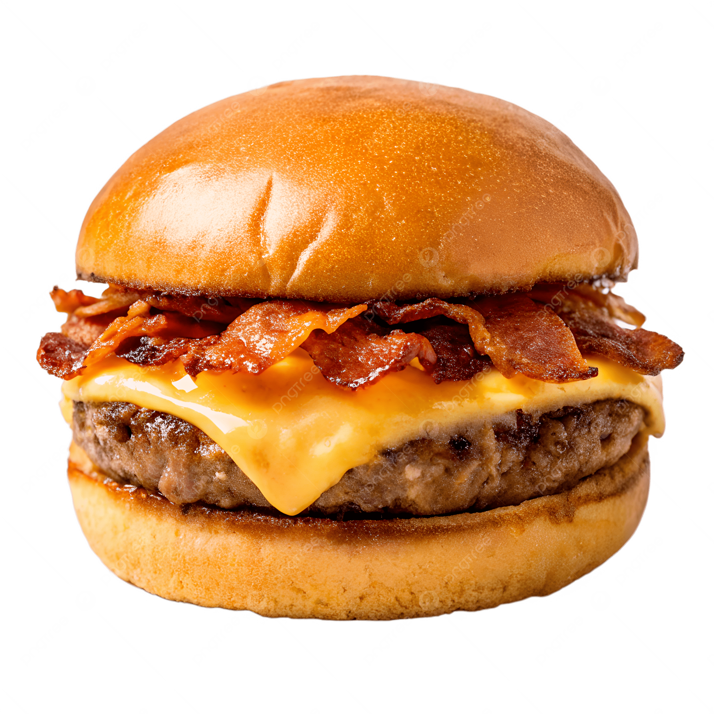

Nossa história
Fé, tradição e muito sabor em cada hambúrguer.
Do coração para a chapa
A Santa Helena nasceu da vontade de servir um hambúrguer feito com carinho, do jeito que a gente gosta de comer em casa.
O nome é uma homenagem à fé e à tradição da nossa gente. O vitral do nosso logo lembra que boa comida também une as pessoas à mesa.
Trabalhamos com carne selecionada, pães frescos e molhos feitos aqui mesmo, todos os dias.
No que a gente acredita
O sabor começa antes da primeira mordida. Está no cuidado com a carne, no pão fresco e nas receitas que preparamos na casa.
-
Carne selecionada
A gente escolhe os cortes com cuidado e mói a carne todos os dias.
-
Pão fresco, casquinha dourada
Pão do dia, macio por dentro e douradinho na chapa.
-
Molhos da casa
Receitas nossas, preparadas aqui para acompanhar cada hambúrguer.

Venha conhecer de perto
Traga quem você gosta, escolha seu hambúrguer e sente à mesa com a gente.
Terça a domingo, das 18h às 23h